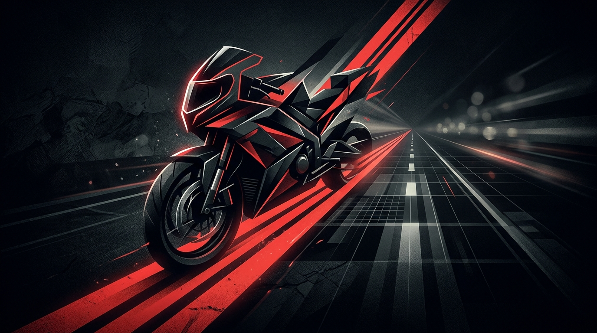
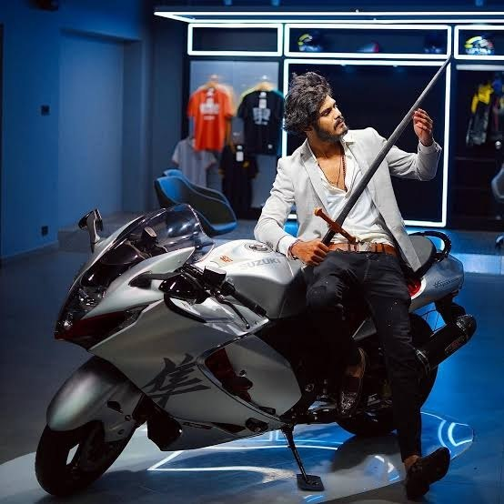

About This Hub
A non-commercial, independent fan tribute celebrating Tamil Nadu motovlogging, cross-country touring, and the 5.1M+ Twin Throttlers community.
Independent. Non-Commercial. Fan-Driven.
This website was built by passionate motorcycle enthusiasts and followers of South Indian riding culture. TTF Vasan (Twin Throttlers) pioneered large-scale motorcycle touring vlogs in Tamil, building a dedicated audience of millions of riders.
Our goal is simple: to offer a clean, beautiful, and verifiable digital destination compiling his career timeline, real video embeds, verified motorcycle fleet, and public news — while respecting intellectual property and YouTube developer terms.
Clear Affiliation Disclaimer: This is entirely an unofficial, fan-made tribute site. We have no direct endorsement, commercial relationship, formal affiliation, or official representation of TTF Vasan or Twin Throttlers.

Our Core Values
How we curate content and maintain an honest community portal.
Pure Passion
Driven by genuine love for motorcycling, road trips, engine acoustics, and the spirit of the open highway.
Safety & Responsibility
We actively advocate for proper riding gear, certified helmets, responsible touring, and legal highway discipline.
Rigorous Integrity
No fabricated stories, clickbait rumors, or invented quotes. Every claim requires reliable sources, or is flagged as sample.
Community Respect
A welcoming, positive environment for riders and fans across all backgrounds, machines, and skill levels.
Editorial & Image Integrity Standards
Verified Image & Provenance Standard
In strict compliance with ethical publication rules:
- Identity Guarantee: Every photograph of a person depicts TTF Vasan himself, sourced directly from verified primary uploads on his official channel `@TwinThrottlers_TTF`. No stock models, unrelated riders, or AI lookalikes are used.
- Motorcycle Verification: Motorcycles featured (Yamaha R15 V3 "Jarvis", Suzuki Hayabusa, Kawasaki Z900) are documented in his channel build vlogs.
- Permitted Platform Embeds: All videos and preview media are delivered via official YouTube players and thumbnails under YouTube's Terms of Service, attributing full views, metrics, and traffic to TTF Vasan.
- Manifest Log: Every asset is registered in
docs/02-design/IMAGE_ASSET_MANIFEST.mdwith exact source links and approval records.
Corrections & Inquiries
We are committed to factual accuracy. If you notice any outdated information or broken links:
Please open an issue in the project's source repository or reach out via our community channels. Content flagged for factual corrections or legitimate takedown requests will be reviewed and acted upon promptly.